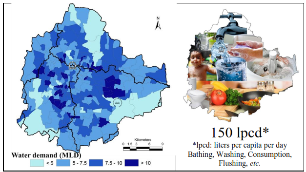
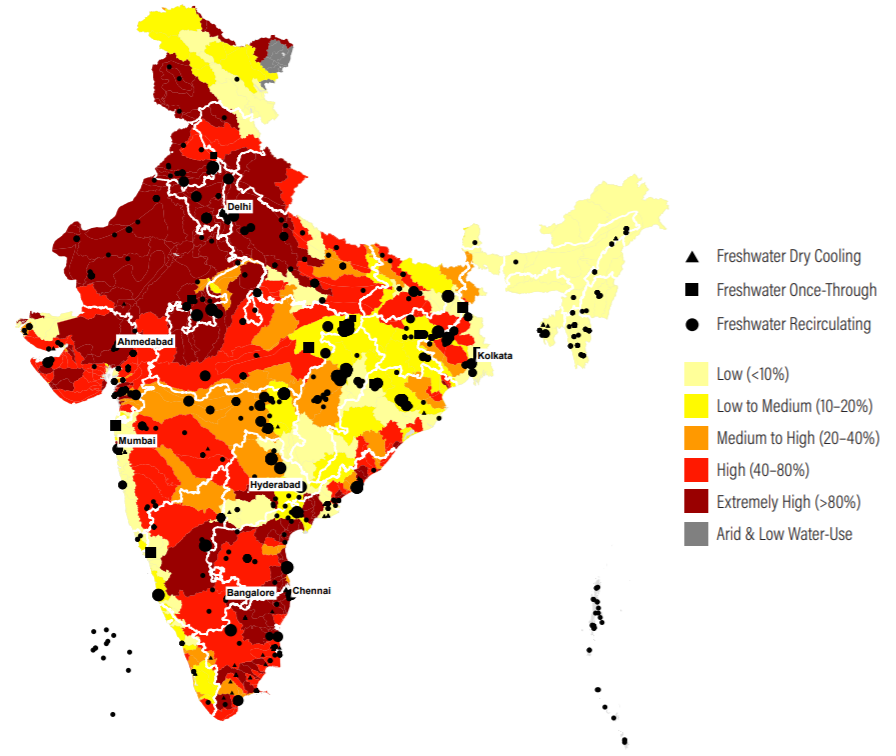
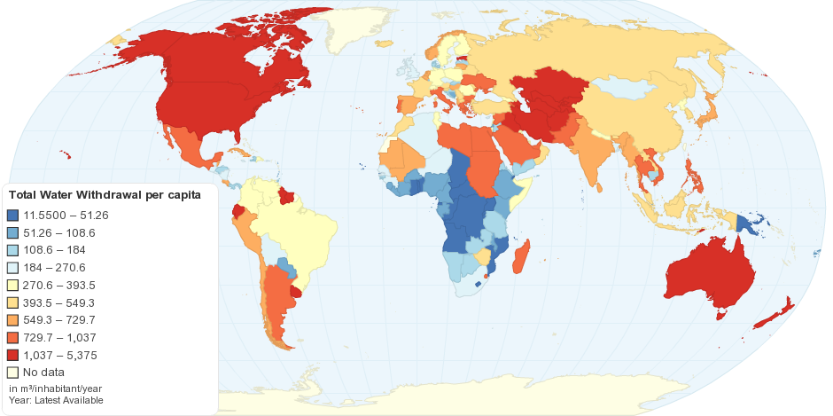

Water usage in different areas.
According to Bangalore Water Supply & Sewerage Board chairperson Dr V Ram Prasath Manohar, the city requires 150 litres of water per person per day, with a total quantity of 200,000 million litres per day for Bengaluru's population of 14 million.

India's Freshwater-Cooled Thermal Utilities Mapped against Baseline Water Stress and Distribution in Installed Capacity by Water Stress Level by State.

This map shows total water withdrawal per capita by country. Water withdrawal is the quantity of water removed from available sources for use in any purpose. Water drawn-off is not necessarily entirely consumed and some portion may be returned for further use downstream.
World average total water withdrawal: ~506 m³/inhabitant/year ( 506,000 liters each person )
Calculation
[Total water withdrawal per capita] = [Total water withdrawal (summed by withdrawn for agricultural, industrial and municipal purposes)] / [Total population]
